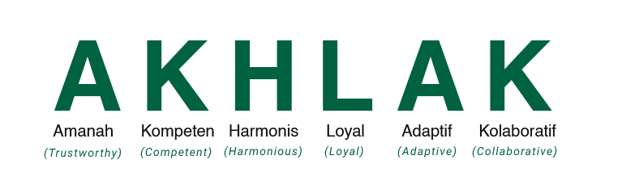

Luas dan Batas Wilayah Kerja
Perum Perhutani Kesatuan Pemangkuan Hutan (KPH) Pemalang adalah salah satu unit manajemen di wilayah Perum Perhutani Divisi Regional Jawa Tengah. Luas wilayah kerja KPH Pemalang berdasarkan PP 72 tahun 2010 tentang Perusahaan Umum (Perum) Kehutanan Negara seluas : 24.389,40 Ha berada pada wilayah administrative pemerintahan kabupaten dan kota yaitu Kabupaten Pemalang (15.895,62 Ha) dan Kabupaten Tegal (8.494,23 Ha)[cite: 5].
Batas-batas wilayah operasional:
- Utara: Kab. Pemalang[cite: 5]
- Timur: Kab. Pekalongan (KPH Pekalongan Timur)[cite: 5]
- Selatan: Kab. Purbalingga (KPH Pekalongan Timur & Barat)[cite: 5]
- Barat: Kab. Tegal (KPH Pekalongan Barat)[cite: 5]
Kawasan, Fungsi, dan Bagian Hutan
Berdasarkan kesesuaian lahan kawasan hutan, fungsi hutan, serta pembagian Bagian Hutan (BH) berdasarkan PP 72 tahun 2010[cite: 5]:
Kawasan Hutan
- Perlindungan 2.693,41 Ha
- Produksi 20.126,92 Ha
- Penggunaan Lain 1.569,07 Ha
Fungsi Hutan :
- HPT 4.478,62 Ha
- Hutan Produksi (HP) 19.910,78 Ha
- Hutan Lindung (HL) – Ha
Bagian Hutan (BH) :
- BH Comal 8.036,67 Ha
- BH Bantarbolang 7.858,50 Ha
- BH Jatinegara 8.494,23 Ha
Rincian 6 BKPH dan 20 RPH
Berdasarkan wilayah pengelolaan KPH Pemalang terdiri dari enam (6) Bagian Kesatuan Pemangkuan Hutan (BKPH) dan Dua Puluh (20) Resort Pemangkuan Hutan (RPH) dengan perincian lengkap di bawah ini[cite: 5]:
BKPH Sokawati
Total: 4.452,90 Ha- RPH Sokawati 1.465,72 Ha
- RPH Mangunsari 682,72 Ha
- RPH Penggarit 786,79 Ha
- RPH Kaliwadas 1.517,67 Ha
BKPH Bantarsari
Total: 3.583,77 Ha- RPH Klapanunggal 854,36 Ha
- RPH Pabuaran 1.349,13 Ha
- RPH Karangasem 1.380,41 Ha
- - -
BKPH Slarang
Total: 3.547,35 Ha- RPH Kramat 795,06 Ha
- RPH Glandang 1.692,39 Ha
- RPH Paduraksa 1.059,90 Ha
- - -
BKPH Cipero
Total: 4.311,15 Ha- RPH Lobongkok 1.479,13 Ha
- RPH Kenyere 1.156,37 Ha
- RPH Kejene 1.675,65 Ha
- - -
BKPH Kedungjati
Total: 4.742,56 Ha- RPH Cipero 1.330,33 Ha
- RPH Dukuhtaban 1.169,66 Ha
- RPH Dukuhrandu 1.136,22 Ha
- RPH Karangmalang 1.106,35 Ha
BKPH Jatinegara
Total: 3.751,67 Ha- RPH Jatinegara 1.611,91 Ha
- RPH Winong 987,52 Ha
- RPH Wrayan 1.152,29 Ha
- - -
"Menjadi Perusahaan Pengelola Hutan Berkelanjutan dan Bermanfaat Bagi Masyarakat"
- Mengelola Sumberdaya Hutan Secara Lestari.
- Peduli Kepada Kepentingan Masyarakat dan Lingkungan.
- Mengoptimalkan Bisnis Kehutanan dengan Prinsip Good Corporate Governance.
Budaya Kerja AKHLAK
Fondasi karakter sumber daya manusia Perhutani dalam memberikan pelayanan prima.

Komitmen SDM KPH Pemalang dalam melayani.
Tugas & Fungsi Perusahaan
Berdasarkan Peraturan Pemerintah Republik Indonesia Nomor 72 Tahun 2010 tentang Perusahaan Umum (Perum) Kehutanan Negara.
1. Tata hutan dan rencana pengelolaan
Mengelola hutan negara secara lestari dengan memperhatikan aspek ekologis, ekonomi, dan sosial budaya secara terpadu.
2. Pemanfaatan hutan
Meliputi pemanfaatan kawasan, jasa lingkungan, hasil hutan kayu & bukan kayu, serta pemungutannya.
3. Perlindungan & konservasi
Memelihara fungsi ekologis hutan untuk melindungi keanekaragaman hayati dan keseimbangan siklus air.
4. Rehabilitasi dan reklamasi
Melakukan pemulihan lahan kritis serta inovasi pengelolaan berbasis ekosistem lingkungan.
5. Kolaborasi & pemberdayaan
Mengembangkan kerjasama aktif dengan masyarakat melalui program perhutanan sosial dan pendampingan.
6. Pengolahan hasil hutan
Menjalankan prosedur pengolahan bahan baku kayu dan non-kayu sesuai standar tata kelola perusahaan yang baik (GCG).
Struktur Organisasi KPH
Bagan hierarki manajemen dan fungsional Perum Perhutani KPH Pemalang:
Divisi Regional
Administratur / KSPH
Polmob
Polmob
Perencanaan SDH &
Pengembangan Bisnis
Pembinaan SDH
Produksi & Ekowisata
Keuangan, SDM,
Umum & IT